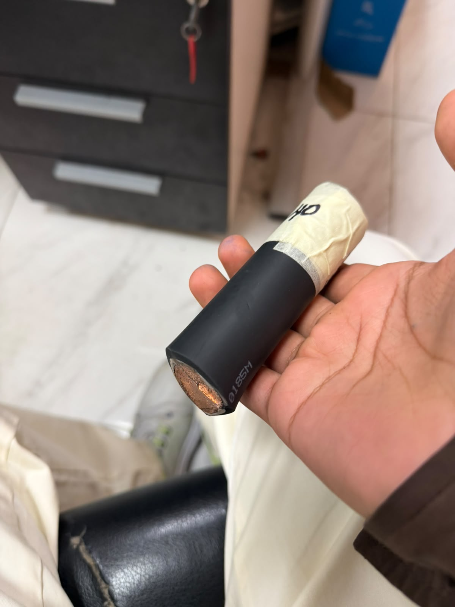
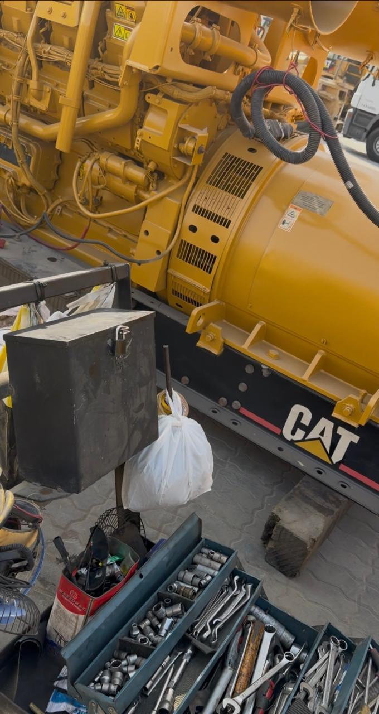
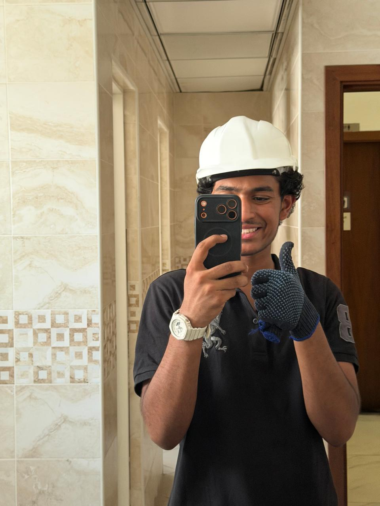

Engineering connection
Generator reliability depends on both electrical and mechanical condition. The placement showed how technicians use inspection, testing and careful reassembly to diagnose faults and return equipment to service.
BUILD 08 / INDUSTRY
Hands-on learning in generator maintenance, electrical and mechanical components, testing and fault diagnosis.
Read the case study
At Quality Equipment Rental LLC in 2026, I spent two weeks learning how generators are inspected, maintained and repaired. The workshop experience connected electrical-machine theory to component inspection, fault diagnosis, testing and careful reassembly.
Learned generator disassembly, maintenance and testing workflows.
Studied electrical and mechanical components, including cable construction.
Learned how faults are identified, checked and addressed during repair.
Generator reliability depends on both electrical and mechanical condition. The placement showed how technicians use inspection, testing and careful reassembly to diagnose faults and return equipment to service.
PROJECT EVIDENCE
Photographs, diagrams and certificates from this project. Open an image to see it at full size.


